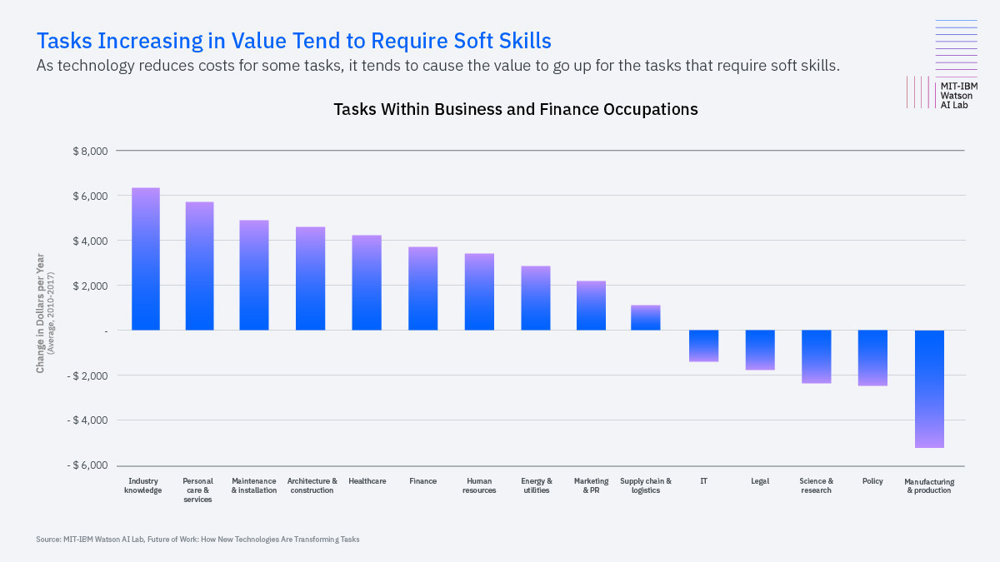

Suggesting AI and automation will eliminate more jobs:
- Job Displacement: Automation can replace human workers in tasks that are routine, repetitive, and predictable. Jobs in manufacturing, transportation, and customer service are at risk of being automated, leading to significant job displacement.
- Skill Gap: AI-related jobs often require advanced technical skills. The existing workforce may not be adequately equipped with the necessary skills, leading to a potential mismatch between the skills required and those possessed by the workforce.
- Income Inequality: The benefits of AI and automation may not be distributed evenly. Wealthy individuals and large corporations may reap the most benefits, leading to increased income inequality, which can have social and economic implications.
- Job Polarization: Automation can lead to job polarization, where highly skilled, high-paying jobs and low-skilled, low-paying jobs are preserved, but mid-skilled jobs are eliminated, leading to a divided job market.
- Economic Disruptions: Rapid adoption of AI and automation can cause economic disruptions, especially in regions heavily dependent on industries vulnerable to automation. This can lead to localized job losses and economic challenges.

In summary, the impact of AI and automation on employment is complex and multifaceted. While AI can create new job opportunities and enhance productivity, it also poses challenges related to job displacement, skill gaps, and economic disparities. Public policies, education and training programs, and proactive workforce planning are crucial in addressing the potential negative impacts and maximizing the benefits of AI and automation.